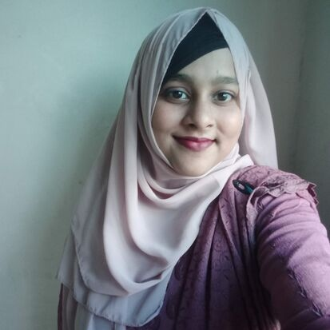

Asma Akter Anika

Career Objective:
Aspiring web developer with an academic background and a strong passion for web design and user-focused digital experiences. Recently transitioned from academia to tech, bringing a commitment to clear, expressive, and collaborative work. Seeking opportunities to grow as a full-stack developer while contributing empathetically and effectively within a team environment.
Education:
B.Sc in Computer Science and Engineering |Brac University(March2019-February2024)
CGPA: 3.29 /4.00
Higher Secondary Certificate |Rajuk Uttara Model College(May 2016-June2018)
GPA: 4.42 /5.00
Secondary School CertificateMilestone School and College( January2014-May2016)
GPA: 5.00 /5.00
Experience:
Teaching Assistant | Crescendo Educational Institute(February 2024-December 2024)
- Taught foundational programming concepts to elementary and middle school students, fostering computational thinking skills
- Designed interactive coding exercises, increasing student engagement by 20%.
Research:
Automated Identification of Ocular Toxoplasmosis in Funduscopic Images Utilizing Deep Learning Models (Under "27th ICCT review")
- Developed a deep learning-based approach for detecting ocular toxoplasmosis from fundoscopic images, leveraging advanced image processing techniques and neural network architectures.
Projects:
Faculty Review Website(Github Repository)
- Developed a web application where students can rate and review faculty members based on their teaching and grading methods.
- Worked extensively on implementing course add/drop functionality and a comment system to facilitate user interactions.
- Utilized Laravel for backend development, ensuring robust server-side functionality and database management.
- Integrated dynamic features like faculty and course information retrieval using [mention database, e.g., MySQL].
- Enhanced user experience through intuitive UI design and seamless navigation.
Heart Disease Prediction(Github Repository)
- Designed and implemented a machine learning model to predict the presence of heart disease using a dataset from Kaggle.
- Preprocessed data by addressing missing values, normalizing features, and performing exploratory data analysis.
- Evaluated models including Decision Tree,Logistic Regression,Random Forest Classification,Support Vector Machines using Python libraries like Pandas, Scikit-learn, and Matplotlib.
Virtual-Alexa(Github Repository)
- Designed and developed a voice-enabled assistant to facilitate seamless voice interactions using Python.
- Implemented core functionalities such as voice command recognition, query handling, and automated responses using libraries like SpeechRecognition and pyttsx3.
- Gained hands-on experience in natural language processing (NLP) and voice-based application development.
Skills:
Technical skills:Microsoft office,Excel,Powerpoint
Soft Skills:Project Management,Public Relations.Teamwork,Time Management,Effective Communication
Programming:HTML, CSS, Javascript, Node, React, PostgreSQL, Web3,DApps,Python
Certification: